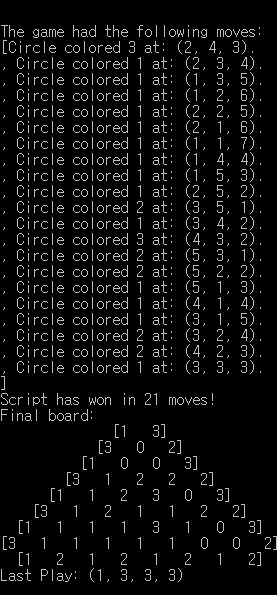
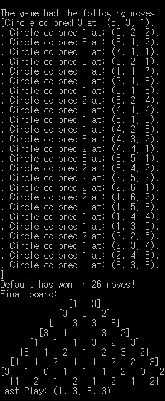
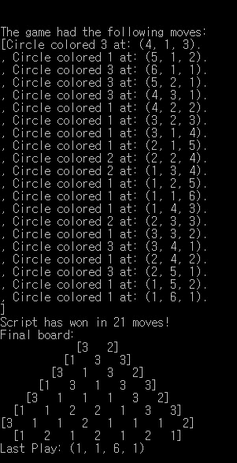
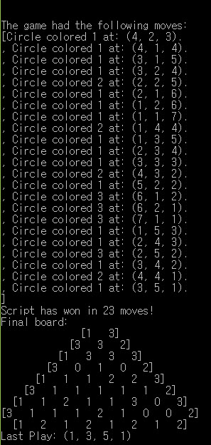

Problem Definition
The goal of this assignment is the devise an intelligent set of ‘rules’ that will compose a programmed player to efficiently play the Atropos game. Developed by the BU Professors Kyle Burke and Prof. Shang-Hua Teng, the goal of Atropos is to make foresightful moves that would force your opponent to make a losing move, forming a triangle of three different colors in the board. In order to make a ‘smart’ player, there are two critical problems that need to be solved: one is garnering custom rules that would appropriately evaluate the available moves to ascertain which is the best, and the other is implementing an efficient algorithm that would execute the rules and direct the player. The solutions to these problems are immensely useful as their application to AI systems make AI systems smarter by allowing them to make appropriate choices in unsupervised conditions, like human would intellectually do. The only anticipated difficulty to achieve the solutions is creatively designing the rules for the AI to evaluate the moves.
Method and Implementation
The major motivation of our implementation comes from knowing that the chance of winning the game increases if the opponent has less number of options to color the board. In other words, the opponent is more likely to lose if he has only one place to color the board rather than five different places. With this logic, our static evaluator was designed to numerically score the possible moves, while using the Minimax algorithm with Alpha-Beta pruning to determine the move efficiently.
Here are the initial algorithmic steps of the method:
1. Process the input string into a board and determine the previous move, if not first move
2. ‘Evaluate’ the board by first determining if there is loser in the game, and if not, find all available around the previous move.
3. Based on the available moves, find the possible moves that will not result in a loss
4. Assign scores to the possible moves that based on our custom range
- a. -∞ is assigned to a move that has to be made even though it results in a loss
- b. 0 is assigned to a move that terminates the game in a tie
- c. 1 through 6 is assigned to a move depending on the number of available moves that the opponent will have:
- i. 1 is assigned to a move that will allow the opponent to color anywhere on the board.
- i. 2 is assigned if the number of available moves for opponent is 5
- i. 3 is assigned if the number of available moves for opponent is 4
- i. 4 is assigned if the number of available moves for opponent is 3
- i. 5 is assigned if the number of available moves for opponent is 2
- i. 6 is assigned if the number of available moves is 1, which is effectively the ‘best’ move.
5. Recursively repeat the steps from 1 until there is a loser in the game.
However, after many iterations, we decided that using the Monte Carlo simulation as the static evaluator to assign scores for the moves was more effective. Not only is the lookahead much further for predicting the effectiveness of the move, but also it is time-saving. For this assignment, we determined that the Monte Carlo simulation value of 10 and the minimax depth of 7 were the best combination.
Experiments
The evaluation of the AI player was based on the number of games won against different types of players on different size of boards. Each test was conducted by simulating 10 games
Using the Minimax with A/B Pruning and Monte Carlo simulation, the run time of a algorithm is typically under a min, varying based on the number of moves made during the game. The runtime of the algorithm exponentially increases with the size of the board.
Define your evaluation metrics, e.g., detection rates, accuracy, running time.
Results
Varying the size of the Monte Carlo simulation and the depth of the tree definitely had an impact on the winning record of the AI player. Here are some images taken during the simulation
Results | ||
| Trials | Source Image | |
| Monte Carlo = 100, Depth = 5 |  | |
| Monte Carlo = 50, Depth = 7 |  | |
| Monte Carlo = 20, Depth = 7 |  | |
| MMonte Carlo = 10, Depth = 7 |  | |
Discussion
Here are the highlights of our method and results:
- The strength of the method is winning ratio of the algorithm, which is approximately 80% of the games played. With alpha-best pruning on Minimax algorithm, the tree is searched to find the ‘best’ move that has the highest Monte Carlo score assigned. The only slight downside is the run time of the algorithm, which we would like it to be faster, but is not easy to achieve given the sheer number of choice that the player is considering.
- The results are generally successful as the they are significantly better than playing at random! As shown by the results, the run time faster with alpha-beta pruning.
- For future, searching ‘deeper’ into the tree to predict further of the possible moves would provide a more decisive move that would help the player to win the game. Also, implementing additional logic into the static evaluators would also help to refine the static evaluation of the moves, helping the player to be even ‘smarter’.
Conclusions
Regardless of the approach, designing an efficient AI player is an arduous task that requires a painstaking process of pruning and refinement. There are countless number of ways to approach the problem, and none will exactly produce a perfect winning record. For instance, searching deeper depths of the minimax tree would increase the chance of winning by providing a more foresightful move, but the time for calculating the move would be exponentially longer. And the vice versa is also true. There must be good blend of the two that will compromise the running time and the winning ratio.
Credits and Bibliography
“Understanding the Minimax Algorithm”
Material on the web should include the url and date of access.
https://www.neverstopbuilding.com/blog/2013/12/13/tic-tac-toe-understanding-the-minimax-algorithm13